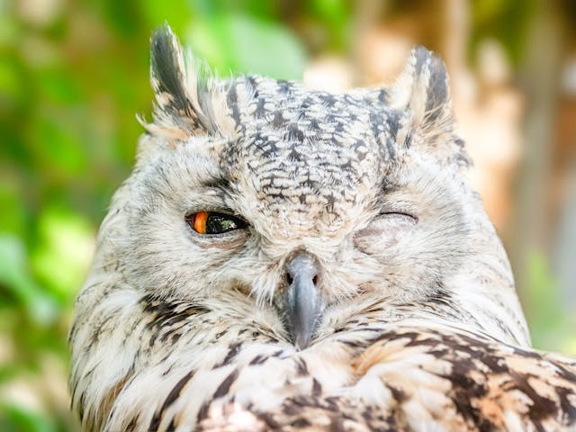
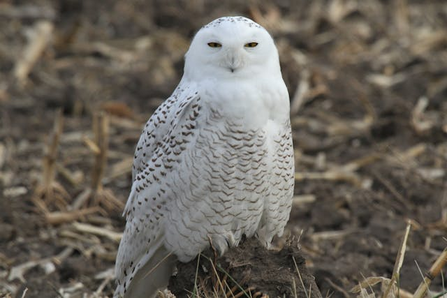
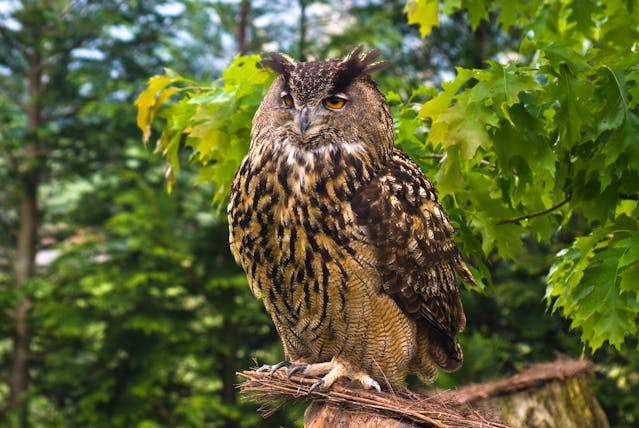
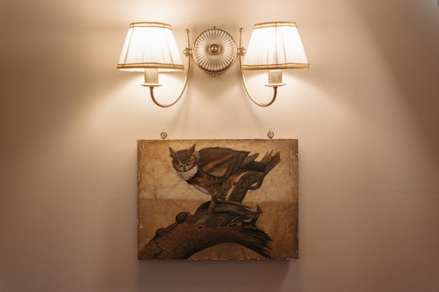

The WWF is one of the most prominent international charities,
WWF works on a vast scale to protect endangered species and their habitats globally.
The address element
Written by Hami Afsar Nafis.
Visit us at: Cumilla, Bangladesh
Strix.com
Box 3500, Cumilla
BD
The map and area elements

The article element
Snowy Owl
The regal Snowy Owl is one of the few birds that can get even non-birders to come out for a look.
This largest (by weight) North American owl shows up irregularly in winter to hunt in windswept fields or dunes, a pale shape with catlike yellow eyes.
They spend summers far north of the Arctic Circle hunting lemmings, ptarmigan, and other prey in 24-hour daylight.
In years of lemming population booms they can raise double or triple the usual number of young.

Eurasian Eagle-Owl
Eurasian Eagle-owls combine fast and powerful flights with shallow wing beats and long, fast glides.
They also soar on updrafts, displaying a type of flight similar to that of soaring hawks like the Red-tailed Hawk.
Eurasian Eagle-owls are among the world's largest owls.
Their pumpkin orange eyes and feathery ear tufts make them one of the most striking owls in the world.

Barn owl
Ghostly pale and normally strictly nocturnal, American Barn Owls are silent predators of the night world.
Lanky, with a whitish face, chest, and belly, and buffy upperparts, this owl roosts in hidden, quiet places during the day.
By night, they hunt on buoyant wingbeats in open fields and meadows. You can find them by listening for their eerie, raspy calls,
quite unlike the hoots of other owls.
The audio element
Click on the play button to play a sound of an owl hooting:
The bdi element
In the example below, usernames are shown along with the number of points in a Owl quiz.
Tasin طاسين: 60 points
Mehraz مهرز: 80 points
Nafis نفيس: 90 points
The bdo element
Nocturnal animals are creatures active at night.
Nocturnal animals are creatures active at night.
The blockquote element
Here is a quote from WWF's website:
For 50 years, WWF has been protecting the future of nature. The world's leading conservation organization,
WWF works in 100 countries and is supported by 1.2 million members in the United States and close to 5 million globally.
The button Element
Click the button for a friendly advice
Canvas
Canvas under construction! ⚠️
The caption element
Monthly Savings
Month
Savings
January
$100
February
$50
The cite element

Owl Painting by Pavel Danilyuk. Painted in Jan 6, 2021.
The code element
This here 👉 button is a clickable button, why not give it a try?
The col & colgroup element
ISBN
Title
Price
3476896
Bird Feed
$53
5869207
Bird Stand
$49
The data element
The following example displays what do owls usually eat:
Rodents
Reptiles
Amphibians
The datalist element
Note: The datalist tag is not supported in Safari 12.0 (or earlier).
The dl, dd, and dt elements
These three elements are used to create a description list:
Coffee
Black hot drink
Milk
White cold drink
The del element
My favorite owl is Snowy Owl Eurasian Eagle-Owl!
The details element
Diurnal Owls
While most owls are nocturnal (night hunters) or crepuscular (dawn/dusk hunters),
some species are active during the day (diurnal), like the Burrowing Owl, Northern Hawk Owl,
and Northern Pygmy Owl, with the Snowy Owl also hunting in daylight due to Arctic conditions,
making them "day owls" adapted for brighter conditions.
The dfn element
Nocturnal Animals are creatures active primarily at night and sleep during the day,
a survival strategy to avoid predators, heat, or to find food, possessing adaptations like large eyes,
excellent hearing, and strong senses of smell to navigate and hunt in low light.
The dialog element
“I think I'm a tiny bit like Harry 'cos I'd like to have an owl.
Yeah, that's the tiny bit, actually.”
― Daniel Radcliffe
“Like some winter animal the moon licks the salt of your hand,
Yet still your hair foams violet as a lilac tree
From which a small wood-owl calls.”
― Johannes Bobrowski
“Owls hoot in B flat, cuckoos in D, but the water ousel sings in the voice of the stream.
She builds her nest back of the waterfalls so the water is a lullaby to the little ones.
Must be where they learn it.”
― Karen Joy Fowler, Sarah Canary
“The inauspiciousness of the owl is nothing but the inauspiciousness of
the man who thinks that owl is inauspicious!”
― Mehmet Murat ildan